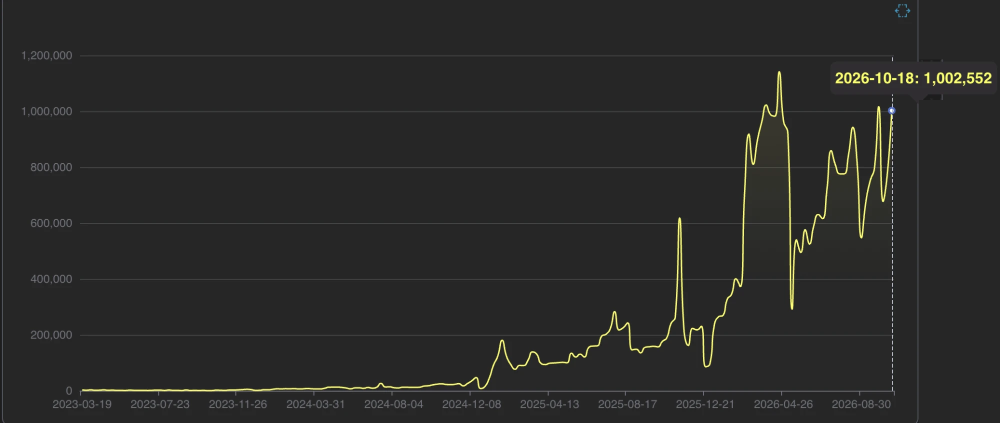

What is chDB,
and what can you
use it for?

Auxten Wang
@auxten · auxten.com
chDB is ClickHouse as a library
Your app
network
port 8123
ClickHouse
Your app's process
your code
function call
ClickHouse engine
This slide is running ClickHouse
Not a screenshot. The engine is compiled to WebAssembly and loaded in this browser tab.
| engine | total |
|---|---|
| 26.5.1.1 | 4999999950000000 |
No install.
No network round-trip.
also: wasm.chdb.io
It started as a wild idea
"What if ClickHouse were a pip install?"
Then it caught on

PyPI downloads per week, Mar 2023 → Oct 2026 · week of 2026-10-18: 1,002,552
pypistats.org + GitHub API, fetched 2026-10-26
One engine, many homes
Part 1: what people do with it
Your tests don't need a ClickHouse server
clickhouse-connect 1.11 + chdb 4.4 · ran 2026-10-26
SQL on the DataFrame you already have
IN
MIDDLE
OUT
Feature prep without a warehouse
RAW LOGS
chDB SQL
DATAFRAME
4.87M feature rows
1.7 s chDB
6.0 s pandas
laptop · single run
An agent's database: one SQL tool
The power is ClickHouse you never noticed
Most people meet ClickHouse as a fast server. Inside, it's also the widest data reader I know.
system.formats
system.table_functions
system.functions
One function per place data lives
file()
s3() url() gcs()
postgresql()
iceberg()
house sales, queried
where they sit.
Three tricks most users never see
SCHEMA ON READ
GLOBS
INSIDE ARCHIVES
Query a file on S3 — from this tab
| rows |
|---|
| 2772030 |
Convert anything to anything
| rep | region | deals | |:-|:-|-:| | Ada | APAC | 12 | | Lin | EMEA | 7 | | Sam | APAC | 9 |
FORMAT Pretty
FORMAT JSON
FORMAT XML
FORMAT TSKV …
In Python, add INTO OUTFILE 'x.parquet' and you have a file converter.
One query, three worlds
PROCESS RAM
ARCHIVE
CLOUD
No load step.
The pipeline is the query.
Part 3: what we built on top
DataFrames in and out — no detours
2023
2024
2026
Numbers are read where NumPy keeps them. Strings still need encoding — so "minimal copy", not "zero copy" everywhere.
What fewer copies buys you
10 everyday pandas tasks on 50M rows: chDB vs pandas
won 10 of 10
won 10 of 10
— fits an 8 GB laptop
AWS c6a.4xlarge (16 vCPU, 32 GB) · Python 3.14 · best of 3 · ClickHouse 26.3 webinar benchmark
ClickHouse in a browser tab
Drop a file on this slide
Parquet / JSON
| country | orders | revenue |
|---|---|---|
| drop a file or load the sample, then Run | ||
Change one import
ClickHouse engine
underneath.
Result checked against real pandas, same file · datastore 4.4.0
A compiler, not a wrapper
1 · RECORD
2 · COMPILE
3 · RUN
Same API, different machine underneath
10M rows, Parquet → answer
ClickBench public results · own laptop run for PyCon JP 2026 (best of 2, results parity-checked)
The ClickHouse engine, inside Postgres
github.com/ClickHouse/pg_chdb
Why Postgres people care
| Extension | Compression | Formats |
|---|---|---|
| aws_s3 | none | TSV, CSV, Postgres binary |
| pg_duckdb | gzip, zstd, snappy* | CSV, JSON, Parquet |
| pg_lake | gzip, zstd, snappy* | CSV, JSON, Parquet |
| pg_chdb | gzip, zstd, lz4, bz2, snappy, brotli | TSV, CSV, JSON, BSON, Parquet, Arrow, ORC, Avro, Protobuf, MsgPack, XML, Prometheus … and more |
* snappy for Parquet only · source: pg_chdb docs on clickhouse.com
took roughly 2–3× as long as pg_chdb for CSV, JSON and Parquet.
Not just Python: 11 ways in
Python and C/C++ are the most mature; Java, .NET, Zig and WASM are early. Same engine under all of them.
chDB is the on-ramp, not the replacement
CHDB · INSIDE ONE PROCESS
CLICKHOUSE SERVER / CLOUD
Three lines for customer conversations
What not to promise
Try it in 30 seconds
these slides, live engine included
github.com/chdb-io/chdb
Thank you.
@auxten · auxten.com · github.com/chdb-io/chdb